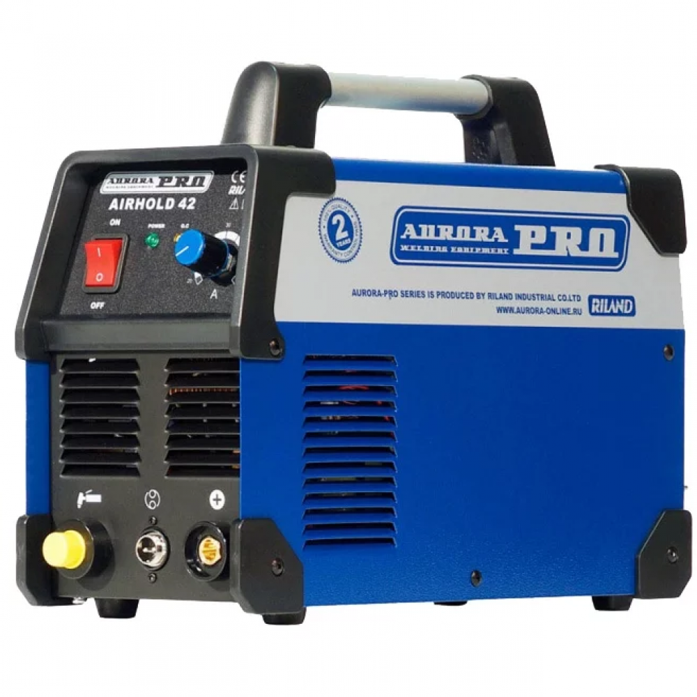

- Фото
- Наименование
- Цена
- 
Aurora PRO 1
Современный плазменный инвертор Aurora PRO AIRHOLD 42 применяется для производительной качественной сварки (резки)...25 990 Aurora PRO 2
Современный плазменный инвертор Aurora PRO AIRHOLD 42 применяется для производительной качественной сварки (резки)...25 990Aurora PRO 3
Современный плазменный инвертор Aurora PRO AIRHOLD 42 применяется для производительной качественной сварки (резки)...25 990Aurora PRO 4
Современный плазменный инвертор Aurora PRO AIRHOLD 42 применяется для производительной качественной сварки (резки)...25 990Aurora PRO 5
Современный плазменный инвертор Aurora PRO AIRHOLD 42 применяется для производительной качественной сварки (резки)...25 990Aurora PRO 6
Современный плазменный инвертор Aurora PRO AIRHOLD 42 применяется для производительной качественной сварки (резки)...25 990Aurora PRO 7
Современный плазменный инвертор Aurora PRO AIRHOLD 42 применяется для производительной качественной сварки (резки)...25 990Aurora PRO 8
Современный плазменный инвертор Aurora PRO AIRHOLD 42 применяется для производительной качественной сварки (резки)...25 990